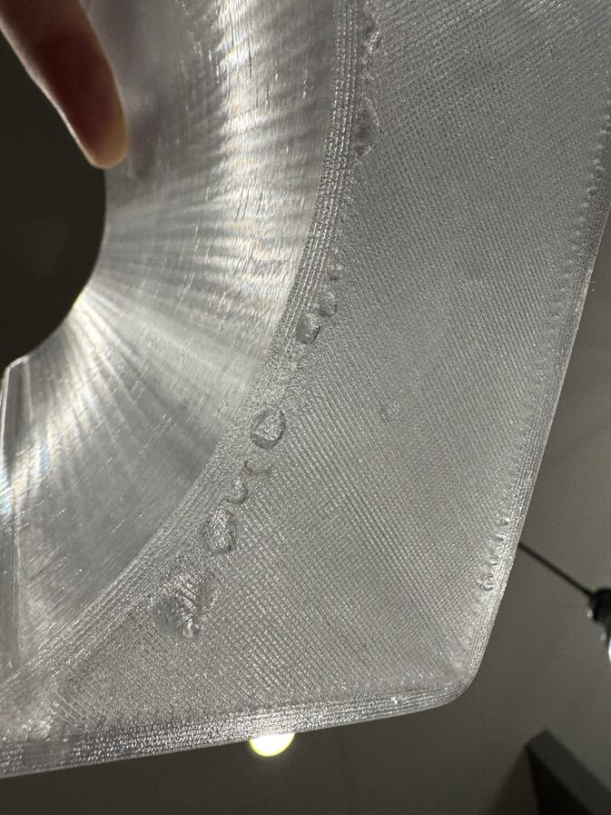

Watertight · the floor
It weeps where the floor meets the wall.
A floor is printed in two parts: loops that follow its outline, then straight fill inside them. Unless the fill is pushed into the loops, the line where the two meet lets water through.
Seen in Bambu PETG Translucent Clear · Mark 1 · 0.8 mm nozzle · flat 3 mm floorNot tried in: PETG Basic

One setting moved, in three steps: how far the fill is pushed into the loops.
Leaked15%, 21 October 2026. The slicer’s own number. Beads in a row: “Leaks between infill and wall.”
One wept30%, 22 to 25 October. Changed with flow, loop count and heat. Bodies held for days. Then the newest wept specks in two hours.
Holds50%, 26 October. The only setting changed. That body: “It’s holding water so far.”
“It does appear to be precisely in the line between wall and infill. I know we increased that overlap some already, can we increase it more?”
An agent prepared 40%. “Please make that 50% instead, thanks.”
What we do now
{{petg_res:/wall_loops}} loops, solid fill between them, and the fill pushed {{petg_plan:/plates/0/infill_wall_overlap}} of a road into the loops on the left body. The PET-GF enclosure stays at {{petg_gf:/infill_wall_overlap}}. Nothing asks it to hold water.
In the record
The beads in a row · The specks at two hours · 30% to 50%, nothing else · Derek, 12 November
Still openThe photographs show where water came out, not the path it took. Nobody has cut a floor open. The first step, 15% to 30%, changed with three other settings. Every result is a fill-and-watch test with no fill height written down. On 12 November 2026 Derek wrote that every reservoir printed since the change was still holding.